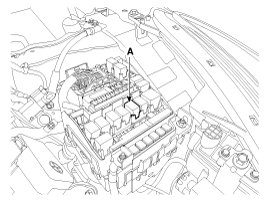
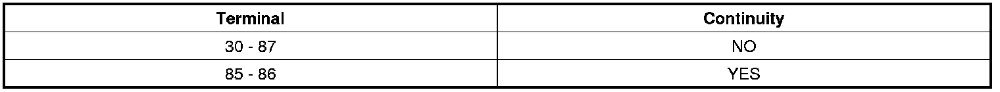
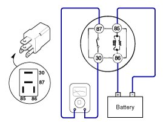

Starter Relay: Testing and Inspection
Inspection
1. Disconnect the battery negative terminal.
2. Remove the fuse box cover.
3. Remove the starter relay(A).

4. Using an ohmmeter, check that there is continuity between each terminal.

5. Apply 12V to terminal 85 and ground to terminal 86.
Check for continuity between terminals 30 and 87.

6. If there is no continuity, replace the starter relay.
7. Install the starter relay.
8. Install the fuse box cover.